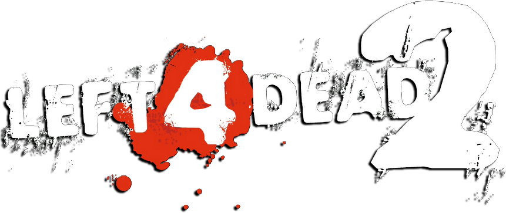

<nz-layout>
    <nz-header>
        <a routerLink="/">
            
        </a>
        <a class="proximo-jogo" routerLink="/proximo-confronto" *ngIf="capitao">
            Próximo jogo <i nz-icon nzType="calendar" nzTheme="fill"></i>
        </a>
    </nz-header>
    <nz-content>
        <div class="inner-content">
            <router-outlet></router-outlet>
        </div>
    </nz-content>
    <nz-footer>3° Torneio de Left 4 Dead 2</nz-footer>
</nz-layout>